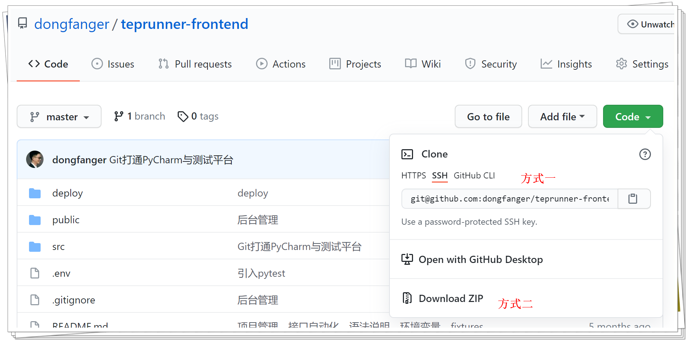
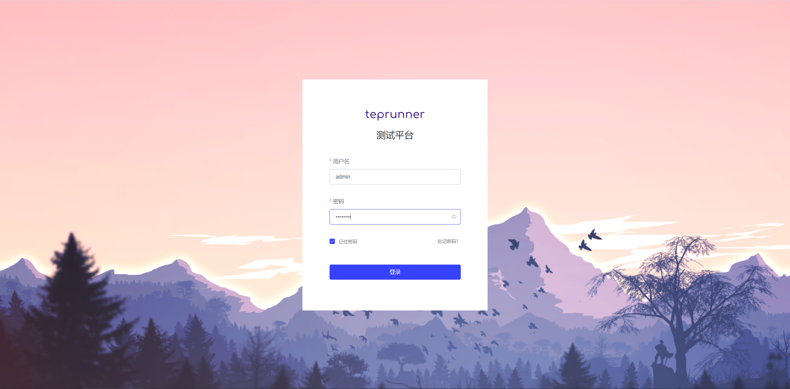
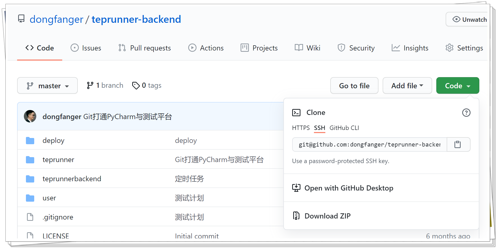

本书作者：测试开发刚哥，文章版权归个人所有，未经授权请勿转载。
很多朋友是因为 teprunner，也就是这个小众的 pytest 内核测试平台关注的公众号。为了让大家更好的上手 teprunner，我更新了它的 README，希望能让小伙伴们根据这些文档内容，一步一步的在自己本地电脑上把项目跑起来。项目跑起来之后，就可以参考前面一系列的学习教程，自己动手做一遍，在做的过程中和 teprunner 进行对比，不懂的点逐一突破，由点到面，完整实现。这种学习方式能更快速的掌握测试平台开发技能哦。
前端项目 teprunner-frontend
源码地址：https://github.com/dongfanger/teprunner-frontend
下载源码
方式①：
git clone git@github.com:dongfanger/teprunner-frontend.git
方式②：下载 zip 压缩包后解压。

安装依赖包
在项目目录打开 cmd，执行命令：
npm install
启动服务
等待依赖包安装完成后，启动前端服务：
npm run serve
访问系统
打开浏览器，输入localhost:8080：

用户名admin，密码qa123456。此时还无法登陆，需要部署后端服务。
后端项目 teprunner-backend
源码地址：https://github.com/dongfanger/teprunner-backend
下载源码
方式①：
git clone git@github.com:dongfanger/teprunner-backend.git
方式②：下载 zip 压缩包后解压。

准备数据库连接
以下两者任选其一即可。
SQLite
SQLite 数据库是 Django 自带的，不需要另外安装。由于会用到models.JSONField，SQLite 默认不兼容，所以需要下载sqlite3.dll文件替换下：https://www.sqlite.org/download.html
根据 Python 版本选择相应文件，比如我的 windows 安装的 Python38-32，下载了sqlite-dll-win32-x86-3340100.zip这个软件包，解压后将D:\Program Files (x86)\Python38-32\DLLs\sqlite3.dll替换。
MySQL
也可以使用 MySQL 数据库，前提是已经安装并创建好了数据库。修改 mysite/settings.py 中的数据库配置：
DATABASES = {
'default': {
'ENGINE': 'django.db.backends.mysql',
'HOST': '主机',
'PORT': 端口,
'NAME': '数据库名',
'USER': '用户名',
'PASSWORD': '密码'
}
}
Django 默认通过底层调用 mysqlclient 这个库和 MySQL 交互。但是 mysqlclient 非常不好安装，我们改用 pymysql。先安装 pymysql：
pip install pymysql
然后在与 mysite/settings.py 文件同级的__init__文件中添加代码：
import pymysql
pymysql.version_info = (1, 4, 0, "final", 0)
pymysql.install_as_MySQLdb()
迁移数据库
数据库准备好以后，就可以执行以下命令，创建表结构：
python manage.py makemigrations
python manage.py migrate
然后执行以下命令，初始化用户数据：
python manage.py loaddata user
启动服务
数据准备好了，执行以下命令，启动后端服务：
python manage.py runserver
启动成功后，确保前端服务也已解决启动成功后，就可以打开localhost:8080，输入用户名admin，密码qa123456登录测试平台体验啦。